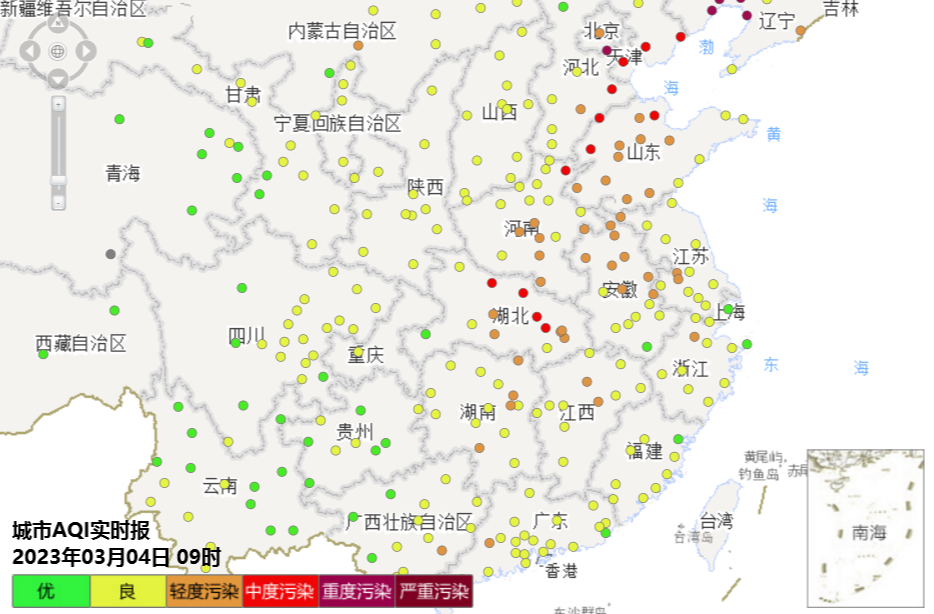

湖北新闻
湖北宜都：村民有序耕作 绘出别致“春耕图”
3月3日，在湖北省宜都市枝城镇洋津畈村，村民们趁着天气晴好，
栽种下一棵棵辣椒苗，现场一派繁忙的景象，从空中俯瞰，犹如一幅
美丽而别致的“春耕图”。(完)

| 湖北新闻 | 武汉新闻 |
湖北新闻 |
| 2023年03月04日 |
|
湖北宜都：村民有序耕作 绘出别致“春耕图”
|
武汉新闻 |
| 2023年03月04日 |
|
2023年3月4日9时武汉市空气质量形势分析快报一、空气质量基本状况 3日夜间我市为晴天，地面以偏南风1到2级为主，部分时段为静风，大气扩散条件不佳，城区小时空气质量维持轻度污染， 4日7时转为中度污染，首要污染物为PM2.5。4日截至9时，城区空气质量指数为145，轻度污染，首要污染物为PM2.5。目前京津冀 、黑龙江、辽宁、山东、河南、安徽、江苏、浙江、湖南、江西、广西、广东、内蒙古、新疆等地部分城市空气质量为轻度到重度污染，首 要污染物为PM2.5或PM10。省内襄阳、随州、孝感、武汉为中度污染，荆门、荆州、黄冈、鄂州、黄石为轻度污染，其他城市空气质量为优到良，首要污染物为PM2.5。  |